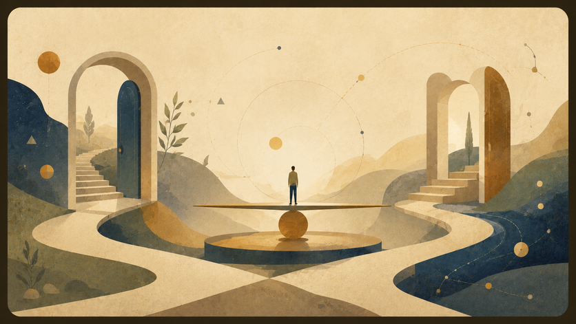

נקודות חולשה
- האם המושגים נשארים מדויקים כשהם עוברים בין תחומים?
- האם השפה הפואטית מגלה משהו, או מסתירה צורך בהגדרה?
- האם שימוש במדע כמשל מסומן מספיק ברור?
כדי שהתאוריה לא תהפוך לאמונה בעצמה, עליה להשאיר מקום לשאלות שמאיימות עליה.


זה העמוד בעברית. מתג השפה מוביל לעמוד המקביל כשהוא קיים; קובצי המקור נשמרים בלי שינוי.


אפשר לשלוח הערות, תיקונים וביקורת לכתובת: betweenpotentialandideal@gmail.com
פתח מייל תגובההפרק הזה אינו נועד להגן על התאוריה בכל מחיר. הוא נועד להראות לקורא שהמודל יודע לעמוד מול שאלות קשות בלי להפוך לביטחון מזויף.
החשש: שימוש במונחים כמו P מול NP, חור שחור או אנרגיה נשמע כאילו המדע מגויס להוכיח טענה מטפיזית. התיקון: כל מונח כזה צריך להיות מסומן כמטאפורה, שפה מבנית או טענה פורמלית, ולכל טענה פורמלית צריך להיות מקור.

החשש: המודל רחב מדי ויכול להכיל כל דבר. התיקון: לשמור על הגדרות קצרות לפוטנציאל, אידיאל ואופטימלי, ולאפשר למושגים להתרחב רק אחרי שהבסיס ברור.
החשש: השפה נוגעת באלוהים, גאולה ואידיאל בלי למקם את עצמה מול מסורות קיימות. התיקון: להבהיר שהמודל אינו דת חדשה, אינו פסק תיאולוגי, ואינו מחליף מסורת.

החשש: ההסברים עלולים לחנוק את הסיפורים. התיקון: לתת לסיפור לפעול במקום שבו הוא חזק, ולהוסיף רק הקדמה קצרה שממקמת אותו בתוך המודל.
נקודת הביקורת החזקה ביותר היא המקום שבו שפה פיזיקלית או מתמטית עלולה להישמע כמו הוכחה מטפיזית. לכן כל נוסחה, דימוי או מושג מדעי צריכים להיבדק: האם הם טענה, אנלוגיה, מטאפורה או כלי קריאה?